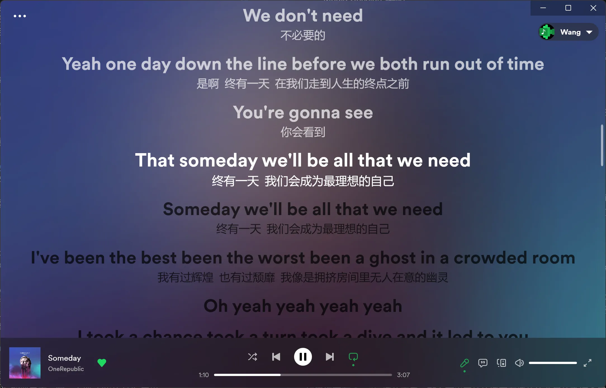
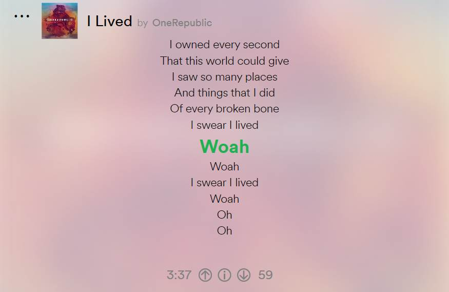

Lyricify 快问快答：把 Spotify 歌词这件事讲透
七个问题带你搞懂 Lyricify 4 这款歌词神器——从它是什么、怎么装、导入按钮为什么灰、到自定义 API Client 和移动端同步，一次扫清所有疑问。
整理一篇关于 Lyricify 的快问快答。这款软件在 Spotify 用户圈子里口碑不低，但上手前总有那么几个问题横在眼前——选最常被问的七个，一问一答直接给结论。
Lyricify 到底是什么？给谁用？
一句话：Lyricify 是 官网 上一款 Windows + 移动端的第三方歌词显示工具，专门给 Spotify 用。它在你的屏幕上覆盖一层漂亮的桌面歌词，或者在 Apple Music 风格的主界面里同步滚动歌词，同时内置歌词库管理，找不到的歌可以手动导入 .lrc 文件。
目标用户很明确：Spotify 深度用户，觉得原生客户端歌词不好用或干脆没有，想要更丝滑的桌面歌词体验、能自己维护歌词库、还想在手机上也同步看歌词的人。不怎么用 Spotify 的可以直接跳过。

装完就能用吗？有没有什么前置条件？
安装包从官方下载拿，Windows 10/11 直接双击就行。但有两个硬前提不能绕：第一，你得有 Spotify Premium 订阅——免费版不支持；第二，Lyricify 4 目前只绑定 Spotify 账号，Apple Music 那套界面风格是它的招牌外观，不代表支持 Apple Music 账号登录。
第一次启动会弹欢迎向导，引导你连 Spotify。授权完就能看到主界面，默认深色主题、Spotify 绿色点缀，和 Spotify 自身风格基本一致。桌面端首次连上后需要等几秒让它拉一下你最近在听的曲目，别急着切歌。
曲目管理里导入歌词按钮为什么经常灰掉？
这是新手遇到最多的问题，四条原因从高频到低频排：
最常见的一条——当前歌曲已经有歌词在显示了（不管是自动搜索来的还是歌词库缓存的），Lyricify 认为"已经有了就不用再导"，直接禁用导入入口。解决办法：曲目管理里先点"重置歌词"，清空缓存后按钮就回来了。
第二条——Spotify 此刻根本没在放歌。Lyricify 的歌词管理必须有一首正在播放的曲目作为操作目标，没歌可关联，按钮自然灰。先放一首歌，等歌词界面有东西显示再回去操作。
第三条——你要导的那首已经在歌词库里而且被标记为"正确"了，Lyricify 不想让你覆盖。去曲目管理里搜到这首歌，找到歌词库区域点"取消标记"或"从歌词库移除"。
第四条——你开着中文翻译模式。这个是已知限制，开翻译时某些歌词管理操作会被临时禁用。关掉再试就行。
实在懒得绕界面？直接把 .lrc 文件拖进 Lyricify 窗口——当前播放的曲目自动关联，绕过整个曲目管理。或者主菜单 → 歌词 → 从链接获取歌词，粘贴 QQ 音乐或网易云的歌曲分享链接也行。
深浅主题切换有什么要注意的？
Lyricify 4 默认深色主题，和 Spotify 深色界面几乎无缝。主菜单 → 窗口 → 主题 → 深色/浅色，切换即时生效不用重启。
容易踩的一个点是桌面歌词的配色按主题独立存储。比如你在深色主题下把桌面歌词调成半透明黑底白字，切到浅色主题后桌面歌词会恢复浅色主题那次保存的版本（可能是半透明白底深色字）——两边互不影响，这是设计出来的不是 bug。深色和浅色场景下桌面歌词的最佳配色本来就不一样，分开存反而省心。
另外 Store 版有完整的配色编辑器，GitHub Releases 版没有，但手动改配置文件也能调。系统级跟随 Windows 深浅主题目前不支持，得手动切。

429 限流是什么意思？怎么彻底解决？
429 是 Spotify API 的限流返回码——通俗说就是"你请求太频繁了，先等等"。默认情况下所有 Lyricify 用户共用一套 API Client，高峰期排队被限流是常态，表现就是歌词搜索慢、偶发失败、界面提示重试。
彻底解决的办法是配置自定义 Spotify API Client。你去 Spotify Developer Dashboard 自己创建一个应用，拿到 Client ID 和 Client Secret，填回 Lyricify 的欢迎界面就行——具体步骤可以翻 Lyricify文档 里的自定义 API Client 章节，跟着一条条做不会错。之后走的是你独立的配额，不再跟别人排队，429 基本消失。
配置有几个注意事项：Redirect URI 必须是两条都加——http://127.0.0.1:766/callback 和 lyricify://callback，第一条是 127.0.0.1 不是 localhost（Spotify 2025 年起拒绝 localhost），点旁边的 Add 按钮逐条加不能一次性贴两个。当前 Lyricify 版本要在 4.3.48 以上，低于这个版本因为 Spotify 旧接口下线已经跑不动了。Client Secret 别乱发，暴露了去 Dashboard 删掉重建就行。
移动端装好了怎么也看不到歌词？
移动端的定位是"显示歌词"不是"播放音乐"，顺序搞反是第一杀手。正确流程：先在移动端完成 Spotify OAuth 授权 → 打开 Spotify App 放一首歌 → 切回 Lyricify Mobile（或者按 Lyricify 里播放控制区的按钮）→ 歌词才会出现。很多人在 Lyricify 里按播放期待音乐响起来——不会响的。
提示"没有找到歌词"的话，去电脑端打开这首歌看桌面端能不能搜到。桌面端能搜到说明歌词是自动来的，需要在桌面端手动标记后才会同步到移动端。桌面端也搜不到就去曲目管理手动导入 .lrc 文件，标记好移动端就能用。
还有两个排查点：桌面端和移动端必须登录同一个 Spotify 账号，歌词库是按账号隔离的；刚在桌面端标记完，移动端可能要等几秒到几分钟同步，完全关闭 App 重开最快。
值不值得长期用？
如果你是每天都开 Spotify 的重度用户，值得装。桌面歌词的质感、深浅主题的独立配色、自定义 API Client 解决限流、移动端歌词库同步——这几件事加在一起，基本就是 Spotify 歌词体验的完整方案。安装包不挑机器，配置一次之后几乎不用再碰，属于装完就放那的那种工具。
唯一的小门槛是自定义 API Client 那段，对命令行和 OAuth 不熟悉的人可能会卡一下，但跟着步骤一条一条走，十分钟能搞定。搞定之后就是纯享受了。
关于 Lyricify 的完整资料我同步维护了三份镜像——GitHub 上在官方仓库，国内用户可以直接去Gitee 或 GitCode 拿，内容全链路同步不打折扣。